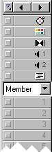

Using Director > Director basics > Introducing the Director workspace > About Channels in the Score
Using Director > Director basics > Introducing the Director workspace > About Channels in the Score |
About Channels in the Score
Channels are the rows in the Score that control your media. The Score contains sprite channels and special effects channels.
Sprite channels are numbered and contain sprites that control all visible media in the movie. Effects channels at the top of the Score contain behaviors as well as controls for the tempo, palettes, transitions, and sounds. The Score displays channels in the order shown here.

The first channel in the Score contains markers that identify places in the Score, such as the beginning of a new scene. Markers are useful for making quick jumps to specific locations in a movie. See Using markers.
While the Score can include up to 1000 channels, most movies use as few channels as possible to improve performance in the authoring environment and during playback. Sprites in higher channels appear on the Stage in front of sprites in lower channels. Use the Property Inspector's Movie tab to control the number of channels in the Score for the current movie. See Setting Stage and movie properties.